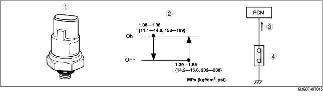

• A triple pressure type has been adopted.
• Consists of the low/high-pressure switch that protects the refrigerant cycle by cutting the A/C signal when pressure in the refrigerant cycle is abnormally high or low, and the medium-pressure switch that outputs an idling increase signal according to the A/C compressor operation load.
• When the refrigerant pressure is approx. 1.39 kPa {14.2 kgf·cm2, 202 psi} or more, the contact is energized and an idling increases signal is output to the PCM.
• When the A/C is on and an idling increase signal is input to the PCM, it sends an operation signal to the IAC solenoid valve.

.
|
1
|
Refrigerant pressure switch
|
|
2
|
Operation pressure
|
|
3
|
Idling increase signal
|
|
4
|
Medium-pressure switch
|